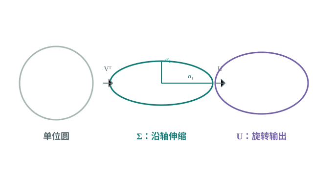

奇异值分解与低秩近似
特征分解只适用于拥有足够特征向量的方阵；奇异值分解则适用于任意实矩阵。它把变换拆成输入端旋转、坐标轴伸缩和输出端旋转。
先提出问题：一个任意矩阵能否拆成几个简单动作？
矩阵可能是长方形、不可逆，甚至没有足够的实特征向量。我们仍然希望找到一组正交输入方向，让每个方向经过变换后变成某个正交输出方向，并且只改变长度。
奇异值分解（SVD）正是这样一种普遍分解。它不要求矩阵是方阵，也不要求矩阵可对角化。
先看图形：圆先旋转，再伸缩，最后再旋转

建立数学语言：SVD 的完整结构
对任意实矩阵 A∈Rᵐˣⁿ，都存在正交矩阵 U、V 和非负对角形矩阵 Σ，使得：
完整形式中 U 是 m×m 正交矩阵，V 是 n×n 正交矩阵，Σ 是 m×n 的对角形矩阵。Σ 对角线上的非负数 σ₁≥σ₂≥…≥0 称为奇异值。实际计算常使用只保留非零奇异值的紧致形式。
奇异向量与奇异值
若 vᵢ 是 V 的第 i 列，uᵢ 是 U 的第 i 列，则：
奇异值的平方是 AᵀA 的特征值：
推导与例题：把一个矩阵压缩成最重要的方向
先看最简单的例子 A=diag(3,1)。它的 SVD 可以直接写成：
单位圆经过 A 后变成半轴长度分别为 3 和 1 的椭圆。第一主方向被拉长三倍，第二方向拉长一倍。若只保留第一方向，得到秩为 1 的近似矩阵 diag(3,0)。
一般地，把前 k 个奇异值和奇异向量保留下来，得到 Aₖ。它是在所有秩不超过 k 的矩阵中，对 A 的最佳低秩近似（Eckart–Young 定理）。Frobenius 范数误差为：
与数据分析的联系
对中心化的数据矩阵 X 做 SVD，右奇异向量给出变量空间中的正交方向，奇异值大小反映数据沿这些方向的变化尺度。这与 PCA 的主成分方向密切相关；具体协方差缩放取决于是否使用 1/n 或 1/(n−1) 的约定。
交互实验：控制椭圆的短轴
固定第一奇异值 σ₁=3，拖动第二奇异值 σ₂。短轴变短时，椭圆逐渐趋向线段；σ₂=0 时矩阵的秩降为 1。
奇异值实验室
σ₁ = 3，σ₂ = 1.00
边界与易错点
- SVD 对任意实矩阵都存在。 特征分解则要求方阵，且对角化需要足够多线性无关的特征向量。
- 奇异值非负。 它们是伸缩尺度，不表示方向翻转。
- 左右奇异向量属于不同空间。 V 的列在输入空间 Rⁿ，U 的列在输出空间 Rᵐ。
- 低秩近似不是无损压缩。 截断奇异值会带来可计算的误差。